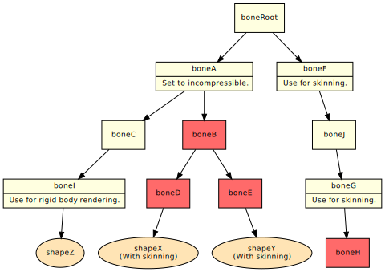
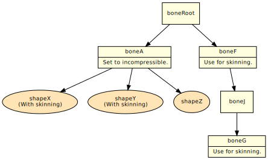
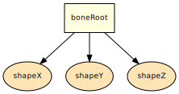

- Overview
- Cull Bone Compression
- Merge Bone Compression
- Unite Child Bone Compression
- Unite Bone Compression
- Unite All Bone Compression
- Tips for Selecting the Bone Compression Format
Overview
Bone compression is an optimization for deleting or merging unnecessary bones in rendering models. This optimization reduces the binary size and conserves the amount of memory consumed, or reduces computation costs when rendering. You can use the intermediate file optimizer to apply bone compression to model intermediate files. For more information, see Intermediate File Optimizer.
This page describes the algorithms for bone compression formats and usage notes.
Cull Bone Compression
Culls bones that are unrelated to rendering the model and are located at the end of the hierarchical bone structure, and then compresses bones. Cull bone compression is used with character models for which a non-uniform scaling (where X, Y, and Z are not the same values) has been set.
Algorithms
Bones satisfying the following conditions are deleted beginning from bones at the end of the hierarchy up to parent bones.
- Bones without children
- Bones that can be deleted (
compress_enable="true") - Bones for which a bone matrix is not used to render the model (
rigid_body="false"andmatrix_index="–1 –1")
Shapes referencing a bone to be deleted are changed to reference the root bone. Deletes end bones repeatedly until there are no more bones that can be deleted. Finally, nw4f_root is deleted if the name of the root bone is of the form nw4f_root as applied by a DCC plug-in and nw4f_root does not have any children. Shapes referencing nw4f_root are changed to reference a child bone.
|

The red bones are targets for deletion. |
|
| Before compression | After compression |
|---|
If you do not want to delete a particular bone:
On the DCC tool, set compress_enable to false for any bones that you do not want deleted, even if the bone is not used in rendering the model. For more information about this setting, see the Help included with each DCC plug-in.
To perform Cull bone compression, specify the --compress-bone-cull option for the FMD, FSK, and FVB files.
Merge Bone Compression
Merge bone compression reduces the number of bones even further than Cull bone compression because, in addition to performing Cull bone compression, this option creates single bones within the bone configuration by merging the parent and child bones of bones that are unnecessary for rendering. With some models, animation data may increase in size. Merge bone compression is only used with character models for which uniform scaling (X, Y, and Z have the same values) has been set.
Algorithms
Performs Cull bone compression and deletes unnecessary bones at the end of the hierarchical structure. The bone structure is traced in order, beginning from the root bone, and any two bones meeting the following conditions are merged into one.
- They have a parent-child relationship.
- The parent bones can be deleted (
compress_enable="true"). - A parent bone matrix is not used to render models (
rigid_body="false" andmatrix_index="–1 –1").
Calculate new values for Scale, Rotate, and Translate based on the matrix resulting from multiplying two bone matrices when merging bones. If a parent node has multiple children, a similar process is executed on each child bone. This process repeats until there are no more bones to be deleted. Ultimately, the bone serving as the root will have only one child bone. That bone is deleted if it can be and if a matrix is not used in rendering the model. Shapes referencing bones are changed to reference child bones.
|
The red bones are targets for deletion. |
|
| Before compression | After compression |
|---|
If you do not want to spare any bones:
Set compress_enable to false for any bones that you do not want deleted, even if the bone is not used in rendering the model.
Notes
Bones merged during this optimization must meet the following restrictions. If this restriction is not kept, the model may not display correctly.
- Bones that have children must have uniform scale settings (where x, y, and z scale values are the same).
-
scale_compensatemust be set tofalsefor bones to be collected together. Ifscale_compensateistrue, the value after uniting must be changed tofalse. - An error occurs and FSK file compression ends if the
<bone_anim>attributesbinarize_scale,binarize_rotate, andbinarize_translatearefalse.
To perform Cull bone compression, specify the --compress-bone-cull option for the FMD, FSK, and FVB files.
Unite Child Bone Compression
This method gathers together nodes that have polygons located at the end. It can be used together with Cull bone compression or Merge bone compression. Unite Child bone compression is used for character models that have rigid body parts.
Algorithms
The algorithm searches for bones for which compress_enable is false, beginning from end bones and searching up the tree toward parent bones. If a bone for which compress_enable is set to false (called Bone A) is found, and all the bones positioned in the child hierarchy under Bone A meet the following conditions, all bones under Bone A are deleted.
- The bone can be deleted (
compress_enable="true"). - No skinning weight has been applied to the bone (
matrix_index="-1 -1").
If a shape references a bone to be deleted, that shape is changed to reference Bone A. The vertex position coordinates and normal vector vary because the coordinate system changes.
|
The red bones are targets for deletion. |
|
| Before compression | After compression |
|---|
When Used Together With Cull Bone Compression
|
The red bones are targets for deletion. |

|
| Before compression | After compression |
|---|
When Used Together With Merge Bone Compression
|
The red bones are targets for deletion. |
|
| Before compression | After compression |
|---|
Notes
- An error occurs and FSK file compression ends if the
<bone_anim>attributesbinarize_scale,binarize_rotate, andbinarize_translatearefalse.
To perform Unite Child bone compression, specify the --compress-bone-unite-child option for the FMD, FSK, and FVB files.
Unite Bone Compression
This method gathers together compressible bones.
Compressible bones are combined into a bone at the top of the hierarchy for which compression is prohibited. Bones for which compression is prohibited are left behind without being deleted. Skeletal animations and bone visibility animations are maintained. However, this feature cannot be used together with skinning.
Unite bone compression is used for topographical data applied to some skeletal animations.
Algorithms
- After bone compression, only the root bone and any bones for which compression is prohibited (
compress_enable=false) are left. - Shapes referencing compressible bones (
compress_enable=true) are changed to reference bones for which compression is prohibited located at the top of the bone hierarchy. If there are no bones for which compression is prohibited in the top layer, they are changed to reference the root bone. - Coordinate conversions and character animations for compressible bones are merged with bones for which compression is prohibited at the bottom of the hierarchy. (The same process as
Mergebone compression.) - Shapes referencing bones for which compression is prohibited do not change.
|
The red bones are targets for deletion. |
|
| Before compression | After compression |
|---|
Notes
- This optimization cannot be used with skinning models.
- The skinning model is converted to a rigid body fixed in the bind pose and changed to reference the root bone. This conversion includes skinning models that reference bones for which compression is prohibited.
- Coordinates for the root bone remain unchanged. (They are not made into a unit matrix, unlike with
Unite Allbone compression.) - When changing a shape so it references a bone at the top of the hierarchy, vertex coordinates and normal vectors are converted to the coordinate system of the bone to be moved. The size of the vertex array may increase when multiple shapes share the same vertex array.
To avoid this increase in the size of the vertex array, make sure that the coordinate conversion applied to the vertex array is the same for each shape when setting bones. - An error occurs and FSK file compression ends if the
<bone_anim>attributesbinarize_scale,binarize_rotate, andbinarize_translatearefalse.
To perform Unite bone compression, specify the --compress-bone-unite option for the FMD, FSK, and FVB files.
Unite All Bone Compression
This process compiles all bones comprising the model into one bone.
Unite All bone compression is used for topographical data that lacks skeletal animation.
Algorithms
A single root bone results regardless of how compress_enable, rigid_body, and matrix_index are set.
Finally, the root bone matrix serves as a unit matrix. All shapes are changed to reference the root bone, and vertex position coordinates and normal vectors are converted to the global coordinate system.
|
The red bones are targets for deletion. |

|
| Before compression | After compression |
|---|
Notes
- Skinning models are converted to rigid bodies fixed in the bind pose.
- An error occurs and FSK file compression ends if the
<bone_anim>attributesbinarize_scale,binarize_rotate, andbinarize_translatearefalse.
To perform Unite All bone compression, specify the --compress-bone-unite-all option for the FMD, FSK, and FVB files.
Tips for Selecting the Bone Compression Format
Format Characteristics
| Bone Compression Format | Simplified Description | Skinning |
Non-Uniform Scaling of Non-Skinning Bones |
Skeletal Animation of Non-Skinning Bones |
Bone Visibility Animation |
Bones for Compression | Main Applications |
|---|---|---|---|---|---|---|---|
| Cull | Detailed settings are not required, and the compression ratio is low. | YES | YES | YES | Some manual settings are required. | Only end points | Character models |
| Merge | Some detailed settings are required, and unnecessary bones are generally compressible. | YES | Some manual settings are required. | YES |
Some manual settings are required. |
End points + intermediate |
Character models |
|
Unite Child (Usable with Cull, Merge) |
Detailed settings are required, and if used correctly, maximize compressibility of unnecessary bones. | YES | Manual settings are required. | Manual settings are required. | Manual settings are required. | All bones under incompressible bones | Character models |
| Unite | For dynamic terrain models. | Not possible | Manual settings are required. | Manual settings are required. | Manual settings are required. | All bones except incompressible bones | Animated terrain models |
| Unite All | Static terrain models. | Not possible | Not possible | Not possible | Not possible | All bones except root bones | Non-animated terrain models |
Flowchart for Selecting the Compression Format
A flowchart for beginners, for selecting the compression format, is presented below. This is not the only option to select the optimal method based on the data, so use this is a reference in conjunction with the format characteristics presented above.
CONFIDENTIAL